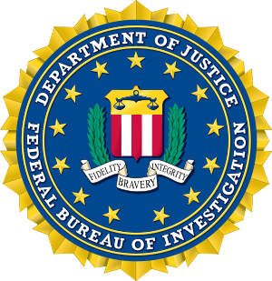

Richard Nixon
| Basic |
Facts |
| Born: |
April 22, 1912, Yorba Linda, CA |
| Spouse: |
Pat Ryan (M. 1940) |
| Children: |
Tricia and Julie |
| Pets: |
cocker spaniel named Checkers |
| Vice President: |
Spirow Agnew |
Presidency
Nixon narrowly beat Hubert Humphrey in 1968. His legacy is overshadowed by the Watergate scandal, but he also is known for his progressive social security policies, anti semitism and his promise to end the war in vietnam.
Wagate Scandal
- Nixon, paranoid and convinced his opposition was doing the same, approves the creation of a covert special investigation unit inside the White House, nicknamed the Plumbers.
- Plumbers operatives orchestrate two break ins of the Democratic National Headquarters at the Watergate Complex, along with other illegal activities. The five burglars were apprehended on June 17, 1972.
- In the weeks following the break-in, Nixon orders FBI Director L. Patrick Gray to “stay the hell out of this.” Washington Post Reporters notice the FBI is not sufficiently investigating the break-in and launch an investigation that eventually proves Nixon approved the break-in and other illegal activities.
- The public learns Nixon tapes all conversations in the Oval Office, and July 13,1973, the Supreme Court orders Nixon to surrender the tapes to investigators.
- Congress moves to impeach Nixon, and he resigns on August 8, 1974.
Late Life
Gerold Ford pardoned Nixon left than a month after he stepped down. Nixon lived out the remainer of his years in in Park Ridge, New Jersey.
Do you know of any government wrong doing? click here to submit a tip to the FBI:

Learn more about the 37th president:
visit nixonlibrary.gov